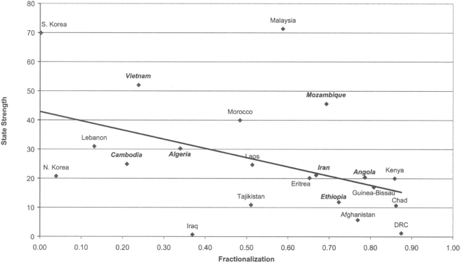
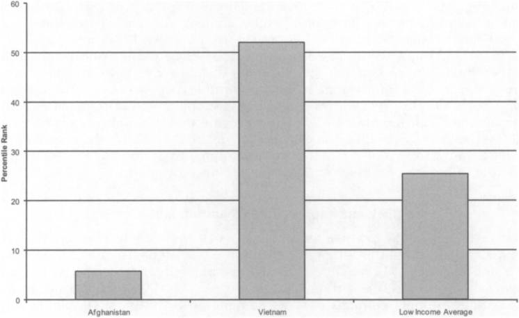

收录于合集

作品简介
作者： Brian D. Taylor, 美国雪城大学政治学教授，主要研究方向为俄国政治研究、比较政治学与安全研究。
Roxana Botea, 美国雪城大学政治学系，研究方向与政治经济学、国家形成与安全研究。
编译： 赖永祯（国政学人编译员，美国芝加哥大学社会科学硕士生）
来源： Taylor, B. D., & Botea, R. (2008). Tilly tally: War-making and state- making in the contemporary third world. International Studies Review , 10(1), 27-56.
https://doi.org/10.1111/j.1468-2486.2008.00746.
内容提要
“战争建国论”是否适用于发展中国家？本文作者回顾“战争建国论”有关文献，对具有长期战争经历的发展中国家国家能力个案——越南与阿富汗进行比较研究。作者检验了国家政权建设的三个机制：筹集资金、建立武装与塑造国族认同，并得出结论，族群同质性基础上长期政治共同体的历史，以及通过战争进行民族主义动员的革命运动的结合，二者的存在导致了越南国家政权的巩固与阿富汗国家能力的削弱。而在两个因素中，族群同质性是最重要的因素。当缺少以上这些因素时，战争更有可能摧毁而非推动巩固第三世界的国家政权。
文章导读
01
引言
查尔斯·梯利“战争塑造国家，国家制造战争”一言是自马克思与韦伯以来在宏观社会学比较研究中的最具影响力的论述之一，然而这一论述是否适用于非欧洲国家的解释仍存在广泛争论。支持这一论述的学者多主张发展中国家也大致符合这一进程，即暴力冲突有助于第三世界国家的政权建设；而质疑这一论述的学者则指出，国际政治经济体系在近半个世纪以来的剧烈变迁的环境，使得梯利逻辑不适用于解释这一时期第三世界国家的政权发展。
对此，本文选择阿富汗（1978年至今）与越南（1946年至1989年）两个发展中世界中受战争影响最严重的个案，关注近半个世纪以来战争对发展中世界国家政权形成[i]的具体影响。两国都属于发展中世界中遭遇战争次数多、时间长、且具有外部因素干预影响下过程惨烈的国家政权。就两国所经历的战争而言，已有的比较多聚焦两次战争中大国介入失败对美苏超级大国的影响，但忽视了战争如何对阿富汗与越南两国产生了截然不同的影响：在经历了长期的战争后，越南最终成为一个“强国家”，而阿富汗却成为一个“失败国家”。
为回答这一国家能力“因变量”的差异，作者分别在两案例中关注战争是如何通过三个机制来推动巩固国家政权，包括：（1）发展行政体系以保证从民众与经济领域中汲取财政资源；（2）建立以军事武装为代表的暴力机关；（3）塑造并提升民众的国族认同。作者认为，当今世界的战争仍然能够对巩固政权产生积极影响，但需要具有特定的条件：（1）具有以“主体族群”（core ethnic group）为基础而建立政治共同体的长期历史经历；（2）战争过程与革命诉求相结合，具有民族主义与政治意识形态影响的背景。作者进而推断，对于具有以上两个背景的国家政权而言，战争能够“建设”国家政权；反之则对国家政权产生削弱作用。换句话说，在当前国际体系成型的背景下，战争只能对那些在民族认同与政治安排具有一定程度的统一（some degree of the political and national coherence）的国家政权具有巩固作用。由此，作者认为一个“颠倒的梯利论述”适用于对发展中国家的解释：“国家制造战争，战争塑造国家”。
02
战争与政权形成：理论与机制
作者回顾了既有关于政权形成与巩固的解释。梯利认为，欧洲国家政权的形成与巩固源于统治者试图“在特定领土内保持对暴力的垄断”，从而与其内外对手产生冲突，故而迫使统治者强化自身武装力量的建设与加强财政资源的汲取，从而产生相应的军事、财政与行政机构，即国家政权。但这一论述也暗示也只有成功赢得战争的统治者方能巩固政权。由此，梯利“战争塑造国家”论述可以体现为这一机制：战争→汲取→镇压→国家形成。
“战争建国论”的研究进展 ：“战争塑造国家”这一给定背景除被用于解释欧洲大陆总体进程或其他议题（例如政体与行政体系的差异）外，学界尝试用“战争建国论”（bellicist theory）解释非欧洲地区的政权形成的历史。例如杰弗里·赫伯斯特（Jeffrey Herbst）和迈古尔·森提诺（Miguel Angel Centeno）分别讨论了非洲与拉美地区“国家间战争的缺位”导致两地区国家政权未能充分发展（中央政府不能对所辖地区投射影响力、统一的国族认同未能形成）的结果。许田波比较春秋战国时期秦国一统与法国革命的历史经验，认为通过建立对财政汲取与暴力机关直接控制的“自强型改革”促成了强国家政权的建立；就中东地区而言，伊恩·鲁斯迪克（Ian Lustick）认为近代列强的协调阻止了中东地区统治者发动“建国战争”的意图，从而阻止了潜在的统一地区强国的形成。但多数地区视角的研究都在本质上与梯利的命题或反命题相符：较少或低烈度的战争，导致了弱政权的形成。
“战争建国论”是否适用于解释当代发展中国家？ 另一方面，学界就“梯利命题”是否适用于解释二战后新兴独立的国家政权发展历程则产生了争论。部分学者从正面或反面的角度，认为二战后新兴独立国家由于缺乏战争经历，故而多为“弱政权”（Desch, 1996；Migdal, 1998）；或认为第三世界国家的政权发展与欧洲经验相似，只是仍然处在“权力原始积累”（primitive accumulation of power）的缓慢发展过程中（Cohen, Brown, Organski, 1981）。相反，部分学者（包括梯利本人）则公开质疑“战争与国家政权”的联系适用于对发展中国家的解释。他们认为，统治者借战争谋取扩张个人庇护网络、大国对内战干预的抑制作用、战争发生的革命或对外扩张的历史背景都削弱了这一命题的解释力。除此之外，国际经济体系对内战中政权汲取财政资源能力产生一定的负面影响，即内战中的行为体都依赖外援来维持经济基础，而非强化境内财政汲取能力。
案例与机制 ：与既有的多案例、跨地区比较研究不同的是，本文作者关注“战争与国家政权”在具体持久性战争中的政权个案的作用。作者认为，越南与阿富汗构成这一命题的两个“最大可能案例”（most- likely cases），因为两国均先后经历了内战与国际战争的漫长时段，这一点与欧洲国家相似；尽管两国在历史与地理环境等根本特征上具有重要差异，但是就关于回答战争如何增强越南国家政权而削弱阿富汗国家政权的问题上，这些差异是“非关键性”（not critical）的；同时，相较于短暂且持续时间短的战争而言，两国所经历的战争持续时间与致命程度亦有助于对其因果机制展开更细致的跟踪研究。同时，作者在当代政权建设的案例选择上则是根据“战争”这一“自变量”而非“因变量”（政权成功建设）相似的特征进行选择，这与大多数聚焦于“成功案例”的政权建设研究存在差异。
就作者所列举的政权建设的三项机制而言， 筹款能力是国家发动战争或政权建设文献中一项重要国家能力之一 。梯利认为，早期欧洲国家建设军队与发动战争的愿望，是其发展对社会汲取资源（tax its society）能力的最大且最持续的驱动力，而汲取方式包括贡赋或直接税等多种方式，因时而变。其次， 由于国家政权需要在战争中发展，组建武装力量则是“战争建国论”的核心。 而在国家政权发展的历史中，武装力量的组成方式也在发生变化；至十九世纪末，现代国家国防军事体系基于征兵制的推广，从而区分为对外防御的国防军队与维护境内安全的警察力量。再次， 国族认同的塑造也是大多数“战争建国论”文献的重要议题。 梯利认为，大众动员的出现在欧洲国家政权建设的后期阶段，与国家制度中直接税制度与征兵制的出现同时产生。而战争对推动国族认同或“社会同质化”的形成起到了重要作用，即增强国家应对战争的能力。这一论述亦为多位学者所认同。
那么，对于在战争环境下的现当代国家政权而言，为什么有的国家能够比其他国家更好地筹集财政资源、组建军队和塑造民族认同？作者认为以下两项因素至关重要：首先， 族群构成同质性的国家比异质性的国家更为成功 ；安东尼·史密斯（Anthony Smith）认为，在战争环境下，缺乏“主体族群”的族群异质性国家更易导致国家不团结甚至解体；史密斯认为大多数欧洲国家的早期经验就体现了这一点。其次， “革命政权”或“后革命政权”更具有从社会汲取资源的能力 ，因为战争与革命结合的背景使得政权能够充分动员以前未加入战争的群体参加战争（即“全民战争”）；同时，政权内的精英团体能够凭借其意识形态的长期承诺来开展“集体事业”（collective project）。此外，相比于其他类型的统治者而言，通过暴力革命获取政权的精英更倾向于强调控制国家暴力机器的重要性，从而提升国家能力。
03
族群与革命：初探
就本文的研究设计而言，针对两国的案例研究则通过两国政治发展的历史考察以验证关于政权建设的因果机制；但针对国家能力差异的两项假设而言，由于案例数目有限，两项案例研究的功能仅提供一个可信度检验（Plausibility Probe），而非验证假设本身。为弥补案例研究的不足，作者引入对定量数据的观察，从而验证假设的相对推广性（relative generalizability）。结论支持了“族群同质性”假设，而“革命政权”假设则相对模糊。
作者通过对“战争相关性（Correlates of War）”与乌普萨拉冲突数据项目（Uppsala Conflict Data Project）两个数据库的整理，为有效检验“战争建国”论，在其中提炼了二战后经历1000天以上且至少有10000人在战场上丧生的战争（不限于国内战争）的国家，共有21个国家符合这一特征。并通过选取“世界银行治理指标项目”（World Bank Governance Indicators Project）与斯坦福大学族群结构数据库（Alesina,etc.2003）作为以上21个国家的国家能力与族群结构的数据特征。根据此处世界银行数据，作者选择“政治稳定性及缺少暴力冲突”与“政府治理有效性”两个指标作为衡量国家能力的操作化定义。图（1）反映了族群分化程度与国家能力存在显著关系。

图（1）族群结构与国家能力关系（呈显著相关（p=0.04），相关系数为-0.45，七个具有“社会革命”经历的国家显示为粗斜体）
同时在以上21个国家中，共有7个国家在1945年后存在“社会革命”的经历（显示为粗体的国家）。但是，7个国家的国家能力大小存在差异；其中柬埔寨与埃塞俄比亚的革命政权分别由于其乌托邦式政策失败与自然灾害，从而削弱了两政权在革命后的国家能力。因此作者认为，革命后一度上升的国家能力极有可能因为“意识形态承诺的削弱”和社会经济变迁而削弱。作者强调，虽然该部分数据中对国家能力的观察仅反映了当前特征而非国家能力的变迁过程，但亦反映“族群同质性”与“革命政权”两个变量在影响国家能力大小起到重要作用。而就越南与阿富汗两国的比较而言，两国都具有经历长时间的内战与国际冲突的背景，但两国国家能力形成分化。图（2）反映了2005年两国的国家能力大小。其中越南的国家能力高于低收入国家的平均值，而阿富汗则远低于其平均值。接下来作者通过对两国案例的过程追踪，观察国家政权建设的三个机制对两国国家能力大小的影响。

图（2）阿富汗与越南的国家能力比较（根据百分位数排名）
04
越南的战争与政权建设
越南在近代以后受法国（二战期间为日本）殖民统治，并在20世纪40年代后出现了越南独立同盟会（下称“越盟”）领导的民族独立战争。在此期间，越盟通过在其新控制地区征募武装人员与筹集经济资源，成为发展其政权能力的雏形。1954年日内瓦协议签署后，越南革命武装在南北农村地区的影响力与组织政权的能力上升，成为维系其持久战的基础。尽管外国援助都对当时的越南南北政权的维持扮演了重要角色，但北越在动员国内资源上较南越更胜一筹，从而保证了前者在战争的最终胜利。此外，越南革命精英的民族主义动员也进一步强化了其在战争中的角色，并增强了战争中民众与国家的纽带。
筹集资金： 越南受殖民统治时期，法属印支地区的地方行政机关负责全部税收事务，其间接税缴纳至法国中央政府，而直接税缴纳至殖民政府。法国在越南的殖民统治结束后，越南南部在20世纪50至60年代全盘继承了殖民时期的直接税评估与征收机制。1965年，南越政权的国内税收占其国民生产总值的比重低于7%，多源于简单行业的生产与货物税。其财政赤字源自于美国援助，并在1957年达到其财政预算的73%。南越对外援的过度依赖导致其对国内民众征税需求下降。相比之下，在南越境内活动的“南方民族解放阵线”（下称“民解”）革命武装的经济来源共分为四部分：志愿捐助、“胜利税”（victory tax）、强征性收入与自身掌握的产业生产收入。志愿捐助是革命武装促使农民根据其收入多寡向革命武装提供相应额度的经济支持。至1965年，“民解”通过发行战争公债并迫使其控制地区农民购买公债的方式筹集更多资金，其后构成“民解”收入的59%。“胜利税”指“民解”在南越解放区对农民的征税体系，主要针对大米、木材、橡胶与茶叶生产进行征收。1964年“民解”面临收入压力后，对农民的征税税率高达60%。此外，革命武装对资本家群体的罚没构成其强征性收入的来源。据估计“民解”在南越境内的经济收入构成其总收入的80%，余下则由北越政权提供。同时，南北双方都在战争期间接受了大量的外援，但是北越政权由于面对美国的威胁压力而被迫建立“有效前线”，从而在战争期间发展了征税机制；而在越南统一后，全国对工农业实施国有化改造，参与集体化的农业劳动群体比重在最初十年从25%上升至75%。总体而言，越南政府在长期战争中从民众的资源汲取能力迅速上升。
建立武装： 法国在殖民统治时期建立了村级征兵体系。在1946-1954年法越战争期间，由于面临越盟压力与国内政治压力导致征兵困难，法国在1950年建立了“越南国民军”，但在1954年，仅有10%的合资格应征人员参加国民军。法越战争结束后，南越政权军队从20万人下降至15万人，直到1961年前未有改变。而就北越方面，越盟解放军实行征兵制，其武装力量从1946年的16.8万人上升至1954年的35万人（包含缺乏训练的非正规武装）。同时，越盟通过游击战扩大自身控制区，其军事与经济汲取能力上升。1954年后，北越政权建立越南人民军并在越南战争期间在南方发动游击战与民众起义夺取农村政权。在南方新解放区内，“民解”建立新的游击队武装，而当地民众加入游击队的诉求多基于获得土地、革命冒险精神、躲避政府征兵等原因。同时，“民解”则在一些农民不满南越统治的村落发展影响力。在1967年，越南人民军共计员额10万人，此外还包括15万游击队武装与未知规模的准军事武装。越南统一后，越南全国武装人员达到61.5万人；越柬战争爆发后，越南军队人数在1980年上升至百万，并在1987年升至126万人。
塑造国族认同： 越南拥有较长时间成为独立政权的历史。在19世纪前，越南政权发动“南进”扩张，同化南部原占族与高棉族人口，因而在法国殖民统治前具有“原初民族主义”的特征。尽管法国殖民时期将越南划分为三地统治（“东京”（北圻）、安南（中圻）与交趾支那（南圻）），然而越南民众仍视自身为“一个民族”。反抗殖民主义的运动首先在两次世界大战“战间期”由知识分子发动，并在随后扩展至遍布统治精英、官僚、市民与农民的民族运动。1945年胡志明领导的“越盟”共产主义革命将共产主义事业与民族独立目标相结合，从而在战争中塑造国族认同并动员大众加入民族解放战争，并在随后的应对大国与周边国家的战争中强化了越南民族主义。此外，越南的同质性族群结构也助长了统一的国族认同，其87%的人口为京族，其他少数民族人口均不超过2%。
总体而言，战争推动了越南的政权建设，而越南的案例为当今世界“梯利机制”提供了较强的证据。关于战争“建设”国家政权的两个因素由此体现：首先，越南在文化上具有族群同质性特征，其在法国殖民统治前具有较长的政治统治史，而战争推动了国族认同与政权建设。其次，越南革命与战争结合是其国家与政权建设的一个重要因素，越共组织与战略在越战期间扮演了关键角色，北越与“民解”持续的大众军事动员与经济资源汲取推动了强国家的形成。
05
阿富汗的战争与政权建设
阿富汗国家机器在经过8年的对苏战争后出现崩溃，政治权力从喀布尔向反抗武装“圣战士”与地方武装领袖转移。苏军撤离阿富汗后，地方领袖凭借其族群与宗教联系建立了依托武装的自治权力中心。苏军撤出后的阿富汗政府建立新政权的努力基本失败，各地武装组织持续处于敌对状态；而共同外敌的缺失则加剧了相互之间在族群、部族与宗教之间的分殊关系。20世纪90年代后期塔利班夺取权力后，控制全国九成领土；与之敌对的“北方联盟”仅管辖阿富汗东北部地区。但是，塔利班在建立“现代国家”问题上缺乏进展与兴趣。“9·11”事件后美国摧毁塔利班后促使阿富汗新政府成立，后者虽然获得广泛的外部支持，但仍然面临建设国家政权的挑战。
筹集资金： 阿富汗在一战后宣布独立，其新政府曾尝试对农业生产推行直接税政策，但是由于地方部族的反抗，阿富汗遂维持强势部族社会下有限中央集权的既有权力结构。数十年来，阿富汗国家的财政基础从农业直接税转向出口税、天然气销售与外国援助。在苏联入侵前，阿富汗75%的税收来自关税收入。苏联入侵期间，阿富汗政府的财政基础依赖于苏联的资金与赏评援助，以及对苏东阵营国家的天然气出口。其针对国民的征收能力愈发下降。与之敌对的“圣战士”武装虽然在战争早期对当地社会以伊斯兰教法征收“天课”与农业税，同时通过走私贸易等方式获得经济收入，但是在外来援助增加的情况下，阿富汗反政府武装不再依赖征税获得收入。至1992年，作为“国家”的阿富汗仅徒有其表。而由于各地武装控制海关口岸、走私贸易与非法毒品生产等形式维持经济收入，国内冲突转向地方化与部族化的形式发展。包括巴基斯坦、沙特、伊朗和俄罗斯等国亦继续维持对冲突各方的援助，而塔利班亦因而得以从中兴起。但是，塔利班在夺取政权后亦未建立有效的“国家行政机关”。2001年塔利班政权被推翻后，阿富汗政府仍然依赖外援，而地方豪强继续通过对鸦片、走私与其他非法经济活动等方式维持收入。
建立武装： 尽管一战后阿富汗曾试图建立普遍兵役制度，但由于部族叛乱，阿富汗重新建立通过村落长老征兵的间接征兵制。1979年阿富汗战争前期，阿富汗军队面临派系与族群矛盾，征募与维持兵员面临困境。为尝试解决这一问题，阿富汗政府修改征兵法，将服役年龄从22岁下调至18岁。原先免服国民兵役的部落也被纳入服役要求，各省也建立了征兵委员会。然而，阿富汗政府的新规定难以实施，国防军也转而“便宜行事”，例如通过抓壮丁等方式将男性强征入伍。1986年后，阿富汗纳吉布拉政府寻求部族支持，组建“地区部队”和部族精英志愿参加组成的“特别卫队”，并通过向部族武装让渡政治权力与允许获得武器援助换取后者忠诚，并一度对其实行异地部署。但是在苏联撤离阿富汗后，由于正规军实力下降，到1990年，地方武装的兵员甚至两倍于正规军。1991年外国援助骤然停止后，喀布尔当局在地方武装控制区毫无影响力，国家陷入分裂状态。苏军入侵时期的大多数反政府武装也维持碎片化局面，人数最多的组织亦不超过60人。尽管塔利班上台后试图建立一支统一武装（包括执行伊斯兰教法的宗教警察），但是其政权机关较大程度上仍然是脆弱无力。2001年后，阿富汗新政府与塔利班武装都不能够在一个分裂的阿富汗维系“对暴力的合法垄断”。美国和北约组织长时间成为阿富汗最大的军事存在。
塑造国族认同 ：作者认为，尽管阿富汗遭受外国统治的历史短于越南，但是前者并不是一个统一的政治共同体，族群和语言分布上呈现碎片化局面。长期以来，阿富汗境内有多个民族，民族之下分为多个相互竞争的宗族和部族群体。战争时期，村落长老委员会（jirga）成为本地区组织民兵武装的主体，血缘关系因而成为维系政治经济组织的主要方式。1979年战争导致阿富汗国家陷入崩溃，阿富汗反政府武装亦因同样的方式进行组织，内部也因宗教与民族差别而形成忠诚对立，共同的外敌也没有在其内部形成所谓的“我族”（we- ness）意识；而喀布尔政府内部也为此所困扰。苏军退出阿富汗后，原先重要的民族分殊愈发明显。以普什图人为基础的纳吉布拉及其同盟的权力相比于对手有所下降。而在反政府一方，塔吉克人和乌兹别克人组成的政治同盟在新的阿富汗政府中兴起。而关于塔利班崛起的一个原因也离不开普什图人试图重新夺回其在阿富汗的传统影响力。尽管塔利班上台后试图塑造“超越部族”的身份，但是其原教旨主义的意识形态基础使得其更倾向于推行“教法秩序”，而非建立“现代”行政机关，而这一意识形态本身亦具有跨国色彩，而非民族主义。
因此，阿富汗在战争来临前就存在较弱的国家政权，而苏联入侵则加剧了国内的族群分化，而非共同应对外敌。战争促使各方优先关注筹集经济资源与建立武装，但多采取所谓“自衰型”（self- weakening）政策。冲突各方未能建立直接税和征兵制度，而认为比起建立行政机构而言，依赖外部援助更为轻而易举。在政权建设的既有条件（恶劣的地理环境、欠发达的经济与高度的族群异质性）恶劣的情况下，战争使一切变得更糟。
06
结论：研究结果与未来设想
作者认为，战争在越南促成了政权的形成与巩固，而导致了阿富汗的政权崩溃。政权建设的三个机制（筹集资金、建立军队与塑造国族认同）在以上两个案例中共同发挥作用，相互促使其产生正面或反面的结果。作者认为，两个案例中关于战争与国家政权建设的机制符合梯利论述，而区别在于其国际环境的变化，即战争中的行为体能够获得外国援助，且国家实体不会因政权崩溃而丧失国际承认。
同时，越南的“文化同质性”、民族主义与共产主义成功结合的革命运动与政权建设策略，促使越南在战后形成“强国家”。相反，阿富汗缺乏“主体民族”与民族主义革命意识形态，导致国家政权难以克服地方抵制汲取资源的压力。而一度控制阿富汗广大地区的塔利班政权的“政治伊斯兰”则难以适合于“塑造民族认同”与“政权建设”的议程。此外，越南与阿富汗的结局使得过多具有物质结构（material structuralism）色彩的“战争建国论”文献应当关注案例间文化与观念层面上的差异。而对于当代大多数陷入冲突的国家而言，由于内部的碎片化且冲突各方依赖外国援助进行持久战，因而多面临阿富汗式的结局。
就战争与政权建设而言，作者最后提供了一个综述性的未来研究设想。作者认为有五个方面的重要议题：（1）通过 将遭受战争的国家能力差异作为因变量进行定量或案例观察 ，观察导致不同国家能力的原因。（2）关注 特定具体地区内的案例比较 ，关注战争对国家能力大小的影响。（3） 关注战争对改变国家能力产生积极或消极影响的持续性 ；例如处于战争（或者革命）的国家是否能够在时间意义上产生“锚定效应”（ratchet effect）或反向效果，影响战后的国家能力。（4） 国家强制机关在对内与对外功能上的关系。 作者引述梯利观点认为，强制机关在对内与对外功能的分离是历史偶然性的产物，而第三世界国家或由于继承殖民遗产，或仿效“国际标准”也在功能上加以区分，有时并非结构压力下的产物。而机构的功能分化是否对第三世界国家国内政治与对外政策产生影响（如军事政变或黩武政策）则成为一个潜在关注的问题。（5）影响国家政权建设持续存在的 “结构” （例如历史遗产下的民族关系）与 “偶然” （例如政治精英的作用）因素的关系。
译者评述
本文是一篇选择发展中国家案例进行关注“战争与政权建设”关系的论文。作者寻求与缘起于梯利的“战争建国论”（bellicist theory）的系列文献对话，认为既有的以欧洲或其他地区国家早期历史为个案的研究虽内容各异，但共同拥有一个潜在假设，即经历战争的国家比缺乏战争经历的国家相比，前者的国家能力高于后者。作者通过观察二战后面临战争的第三世界国家差异进行观察，提出“质疑”，即同样是战争，却导致不同的国家命运，有的形成“强国家”、有的则成为“弱国家”或“失败国家”。对此作者认为，这一现象并未改变“梯利机制”，而是各自国家的“先期结构”，即国家的族群构成与战争蕴含的意识形态构成，使得在经历战争后产生了迥异的结果。
事实上，“梯利论述”未能关注这一“差异”的问题在于，其立论的历史经验集中于中世纪后期的欧洲社会（包括大量关于非欧洲地区“前国际体系时期”的个案选择）：成功从战争中获胜的国家生存，而失败的国家则被兼并。因此在案例选择上较少关注所谓“反面案例”；相比之下，由于当代国际法的影响，通过战争兼并原主权国家的现象减少；许多名义上具有主权身份，实质处于内战之国家的存在提供了较多“反面案例”的观察。这也喻示了“战争建国论”具有“适者生存”的假定：即这一机制只适用于那些在战争中保存下来的国家政权。
因此，所谓的“战争建国论”仅仅是特定环境（战争）促成或削弱国家能力的一个“机制”。何以导致国家能力差异则需另寻他因。对此，作者提出的假设为民族结构与革命意识形态的动员作用，亦符合经验层面“直觉”，而越南的民族结构背景与革命政权巩固的过程也具有以上的特征。然而数据样本的有限性（21个案例）则使得案例选择不可避免具有为验证假设而“削足适履”（cherry- picking）的色彩。在21个案例中，如果将多族群、非革命立国政权但具有较强国家能力的马来西亚与族群较单一，具有民族革命经历但现国家能力相对不足的阿尔及利亚相比较，则不可避免会得出“革命动员导致弱国家”的论述。尽管正如作者所言，所选案例都具有大国干预且较长的战争时间可以提供一个较理想的案例观察，然而作为具有东亚社会“中央集权传统”的越南与非集权部族社会历史的阿富汗在权力关系与制度安排的“先期结构背景”早已不可同日而语。或者正如作者在结论所言，关注“同地区（实质上是具有更相似的社会结构背景）”的个案能够突出对“给定变量”的聚焦观察。此外，作者对战争过程中的“社会革命”这一定义存在不明确的地方（苏联军事干涉时期的阿富汗政权的意识形态亦具有社会革命的特征）。而若延续“战争建国”的竞争机制假定进行比较，同属获得大国援助的南北越南何以在“建国机制”下却导致迥异的政权命运，亦是一值得关注的问题。
【i】本文中的“国家政权建设”对应于原文的state building和state formation。在现有的文献中，state building多被译为“国家建构”或“国家建设”，指国家政权提升其创造与维持国内秩序的能力。参见：郦菁：《历史比较视野中的国家建构》，《开放时代》2016年第5期；赵明昊：《美国在阿富汗的“国家建设”缘何失败》，《世界经济与政治》2020年第3期。但是，原文中的术语亦可用于指代中文“国家建构”所不能涵盖的未获得完全外交承认的政权（或内战中的割据政权，例如本文的越南）巩固其统治能力的发展过程，而更类似于所谓“巩固政权”。从字面意义上，state formation多侧重解释新兴政权的产生过程，在本文中含义相近于state building。编译根据原文语境，如用于论述概念，则译为“（国家）政权建设”；如用于论述具体实践过程，则译为“巩固政权”。
责编 | 崔宇涵 王川
排版 | 韩柯 陈育涵
文章观点不代表本平台观点，本平台评译分享的文章均出于专业学习之用, 不以任何盈利为目的，内容主要呈现对原文的介绍，原文内容请通过各高校购买的数据库自行下载。
好好学习，天天“在看”